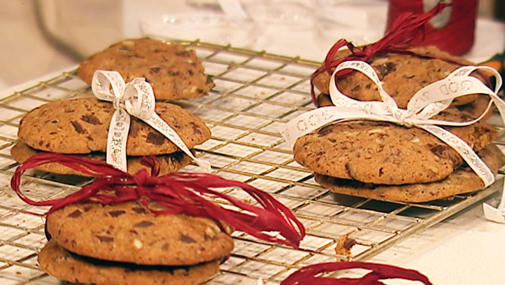

Store myke sjokoladekjeks
Ingredienser
- 160 g romtemperert smør
- 200 g sukker
- 150 g brunt sukker
- 360 g mel
- 2 ts bakepulver
- 1 ts vaniljesukker
- 1/2 - 1 ts malt kanel
- 3 egg
- 350 g sjokoladedråper eller hakket sjokolade,
mørk eller lys
- 100 g havregryn
Slik gjør du
- Bland sammen sukker og smør i en kjøkkenmaskin.
- Tilsett mel, bakepulver, vaniljesukker og kanel,
og bland det sammen til en smuldrete masse.
- Ha i egg, sjokolade og nøtter.
Arbeid deigen raskt sammen.
- Form deigen til en tykk pølse ved hjelp av bakepapir.
La den hvile i kjøleskapet eller i fryseren.
- Skjær deigpølsen opp i 1 cm tykke skiver og stek
skivene ved 180 ºC i 10-15 minutter.

Gå hjem